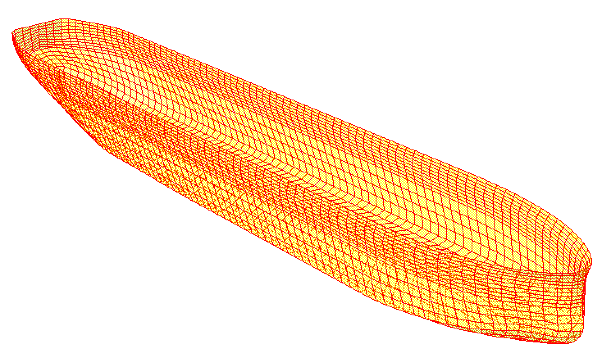

DTU · Special Course · Marine hydrodynamics
A ship in waves.
A study with HydroD.
Understanding the motions and structural loads of a 200-metre ship, at rest and underway.

About the project
From wave response
to structural loads.
As part of a Special Course at the Technical University of Denmark (DTU), supervised by Yanlin Shao, I studied the hydrodynamic behaviour of a 200-metre ship using HydroD.
The study uses the boundary element method (BEM), a potential-flow approach that represents the hull through a mesh of surface panels. I used Wadam for the vessel at zero forward speed and Wasim for forward speeds of 6, 8 and 10 m/s.
The analysis covers vessel motions, roll damping and bilge keels, wave-induced shear forces and bending moments, and added resistance in waves. It connects the hydrodynamic response with questions of hull structural design and propulsion demand.